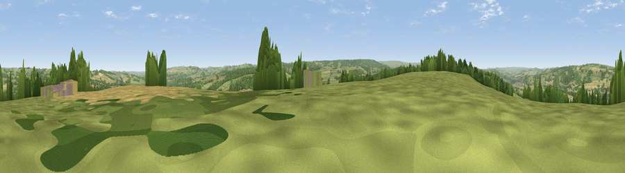

Viewpoint near Corbridge
#13028 in England · top 28% of its area beats it · near CorbridgeThe view, rendered

A 360° render of this exact spot computed from the terrain model, tree cover and land cover — summer colours, afternoon light, calibrated against photographs of famous viewpoints. Real trees, hedges and buildings will differ in detail.
The panorama
Grey silhouette: terrain skyline in each direction (720 bearings, Earth curvature and refraction included). Dashed green: skyline with trees (+15 m) and buildings (+8 m) as obstacles. Blue strip: how far the ground is visible on each bearing.
Where the view opens
Wedge length = distance to the farthest visible ground on that bearing (vegetation-aware). Rings at 10, 25 and 50 km.
What fills the view
50% grassland · 24% woodland · 23% cropland · 3% built-up
Angular shares of the visible panorama (visual magnitude), not map area. Landscape diversity 0.50 (0–1 Shannon).
Key numbers
More beautiful places nearby
The staircase of upgrades: each row has a higher view potential than everything closer. Driving times are estimates from straight-line distance, calibrated against real road routing — check an actual route before setting out.
| Place | Direction | Drive | Score |
|---|---|---|---|
| Viewpoint near Corbridge | WNW · 1 km | ~4 min | 61.0 |
| Viewpoint near Oakwood | NNW · 5 km | ~12 min | 66.7 |
| Viewpoint near Oakwood | NNW · 5 km | ~12 min | 67.3 |
| Viewpoint near Slaley | S · 7 km | ~15 min | 69.8 |
| Viewpoint near Fourstones | WNW · 11 km | ~20 min | 71.4 |
| Viewpoint near Hedley on the Hill | ESE · 11 km | ~21 min | 71.5 |
| Viewpoint near Greenside | E · 13 km | ~24 min | 74.2 |
| Pontop Pike | ESE · 18 km | ~31 min | 77.8 |
54.95422, -2.01285 · source: screening · position refined by local search. Computed location — check access rights before visiting.